электронный ресурс по учебной дисциплине 1-58 01 01 - "Инженерно-психологическое обеспечение информационных технологий"
|
||
| Оглавление | Программа | Теория | Практика | Контроль знаний | Об авторах | ||
| Практика
ЛАБОРАТОРНАЯ РАБОТА № 13 СИНТЕЗ КОМБИНАЦИОННЫХ СХЕМ С ИСПОЛЬЗОВАНИЕМ МУЛЬТИПЛЕКСОРОВ И ДЕМУЛЬТИПЛЕКСОРОВ
Целью работы является изучение мультиплексоров и демультиплексоров, а также синтеза комбинационных схем на основе мультиплексоров и на основе демультиплексоров.
2. КРАТКИЕ ТЕОРЕТИЧЕСКИЕ СВЕДЕНИЯ Традиционный синтез комбинационных схем (КС) включает в себя минимизацию ФАЛ и реализацию минимальной ФАЛ с помощью логических элементов. Используя этот метод, некоторые КС схемы были синтезированы и реализованы как отдельные ИС. Среди них мультиплексоры и демультиплексоры, которые широко представлены как ИС средней степени интеграции. Мультиплексоры и демультиплексоры могут успешно использоваться для реализации различных комбинационных устройств. При этом уменьшается количество требуемых ИС, повышается надежность и снижается стоимость реализации КС.
Мультиплексоры Мультиплексор (или селектор данных) это комбинационная схема, которая коммутирует один из 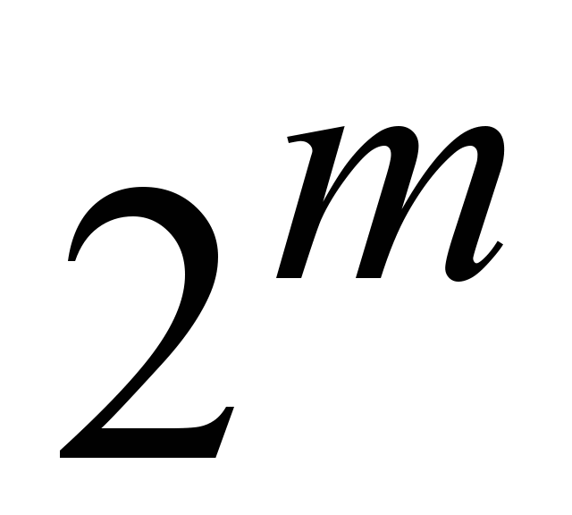 входных сигналов на один выход. Выбор информационного входа, который коммутируется на выход, осуществляется с помощью 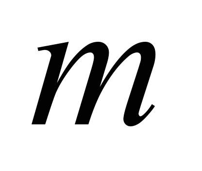 адресных входов. Условные обозначения мультиплексора показаны на рис. 13.1. 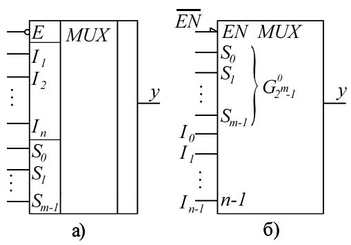
Рис. 13.1. Условное обозначение мультиплексора: а) используемое в отечественной справочной литературе; б) рекомендуемое к использованию международным стандартом IEEE Для выбора одного из n входов, коммутируемого на выход, требуется группа из адресных входов, где 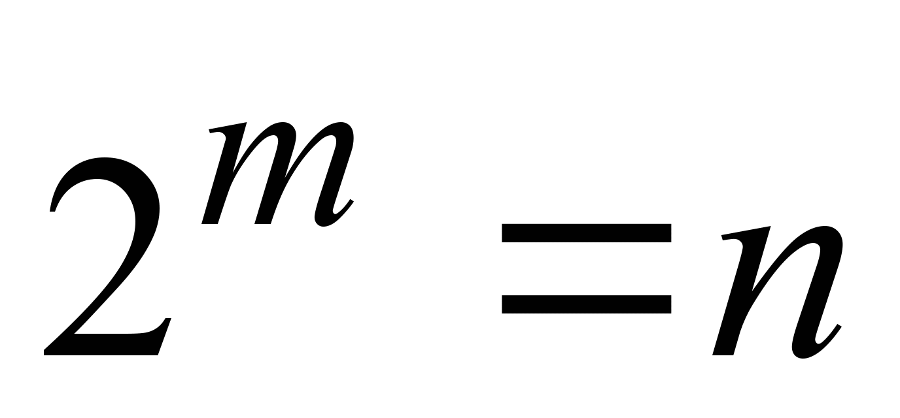. В зависимости от цифрового кода на адресных входах, один из входов выбирается и соединяется с выходом. Обычно стробируемый (G) или разрешающий (EN) вход используется для каскадного соединения мультиплексоров и, который обычно активный при низком уровне, т.е. разрешает работу мультиплексора, когда сигнал на этом входе низкий, лог. 0. Число информационных входов, коммутируемых на выход 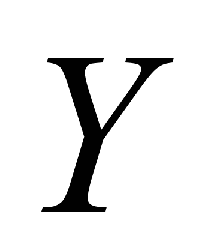, составляет 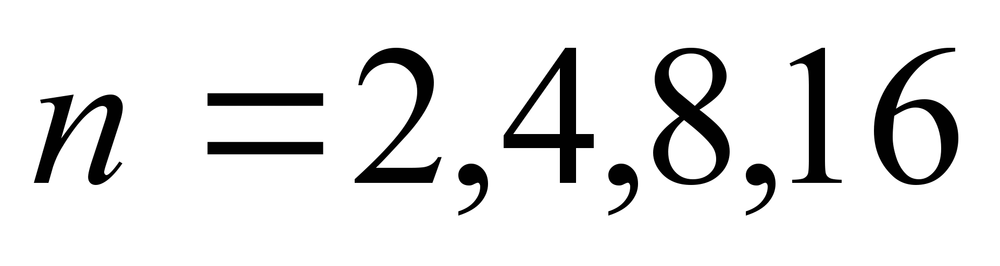. При 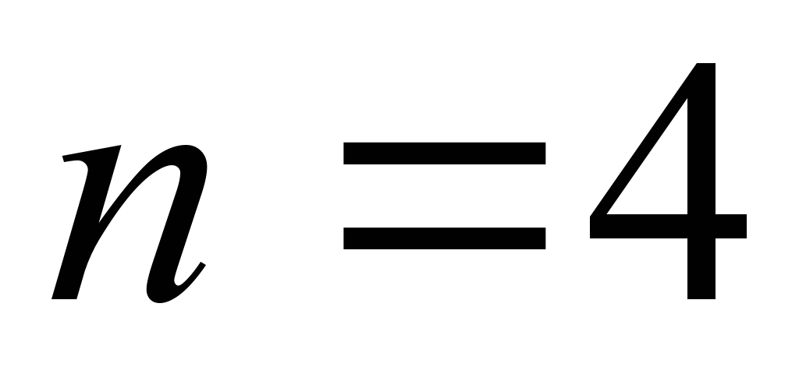 мультиплексор имеет размерность 4:1. Это 4-канальный одноразрядный мультиплексор, на выход которого передается один из четырех входных сигналов. Рассмотрим, как построить мультиплексор 4:1, таблица истинности которого приведена в таблице 13.1.
Таблица 13.1
Выход может быть записан как
Y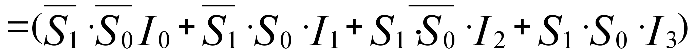 (13.1)
Выражение (13.1) преобразуем, используя двойную инверсию и закон Де Моргана
Y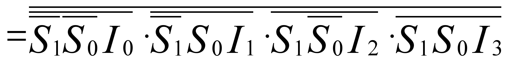 (13.2)
Выражение (13.2) реализуется, как показано на рис. 13.2.
Рис. 13.2. Логическая схема мультиплексора 4:1 с разрешающим входом
Промышленностью выпускаются мультиплексоры размерностью 8:1 и 16:1 со стробирующим входом и без него. Также выпускаются двухразрядные мультиплексоры 4:1 и четырехразрядные мультиплексоры 2:1. Мультиплексоры могут быть использованы как логические элементы для синтеза комбинационных схем. Использование мультиплексоров дает следующие преимущества: 1) Не требуется упрощение ФАЛ; 2) Минимизируется число требуемых интегральных схем; 3) Синтез КС упрощается. Для реализации КС с использованием мультиплексора требуется представление ФАЛ таблицей истинности или в СДНФ, или в СКНФ. Синтез КС сводится к следующему: 1) Определяется десятичные номера каждого минтерма ФАЛ и входы мультиплексора, соответствующие этим номерам соединяются с лог. 1. 2) Все остальные входы соединяются с лог. 0. 3) Входные переменные ФАЛ подаются на адресные входы.
Пример 13.1. Реализовать следующую ФАЛ, используя мультиплексор 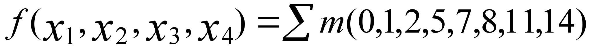 Решение. ФАЛ четырех переменных, поэтому мультиплексор должен быть с четырьмя адресными входами, рис. 13.3. 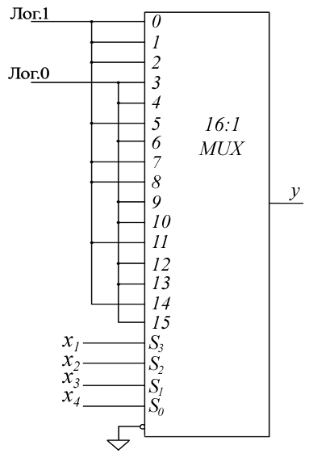
Рис. 13.3 Реализация ФАЛ 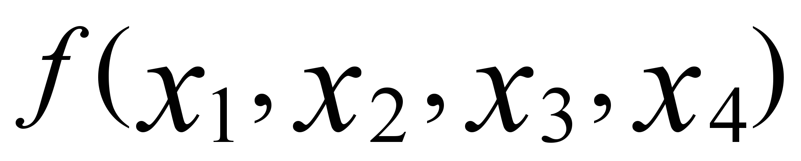 из примера 13.1
Реализация функции m+1 переменных на мультиплексорах с m адресными входами.
Рассмотрим это на примере. Пример 13.2. Реализовать ФАЛ, заданную таблицей истинности, таблица 13.2. ФАЛ четырех переменных может быть реализована, используя мультиплексор размерностью 8:1, рис. 13.4. Переменные ФАЛ 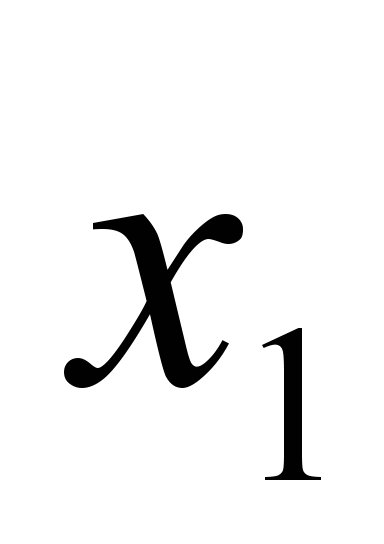, 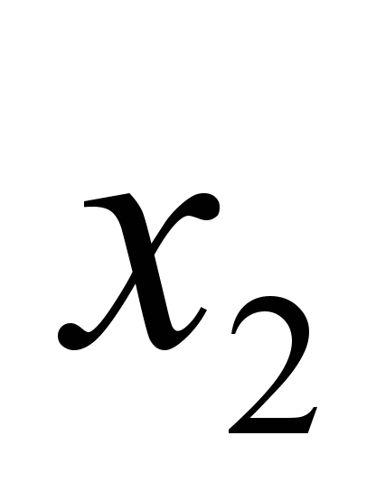, 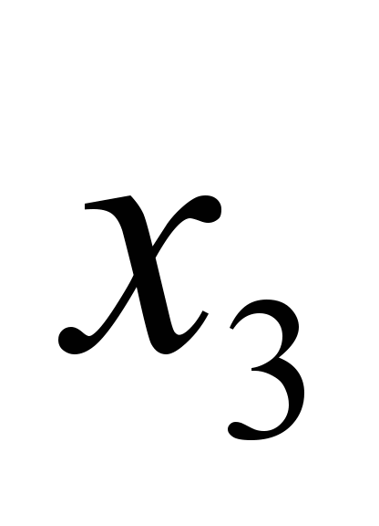 подсоединим к адресным входам 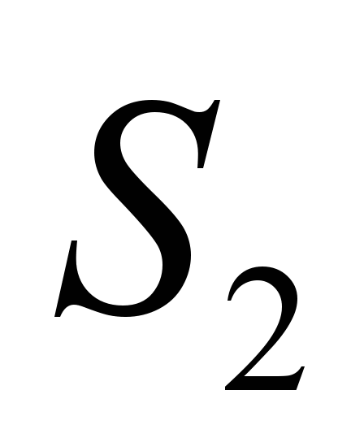, , соответственно. Переменную, не подсоединенную к адресным входам, называют «выделенной». Без выделенной переменной наборы переменных , , образуют пары. В таблице истинности эти пары выделены пунктирными линиями. Теперь рассмотрим соотношения между выделенной переменной 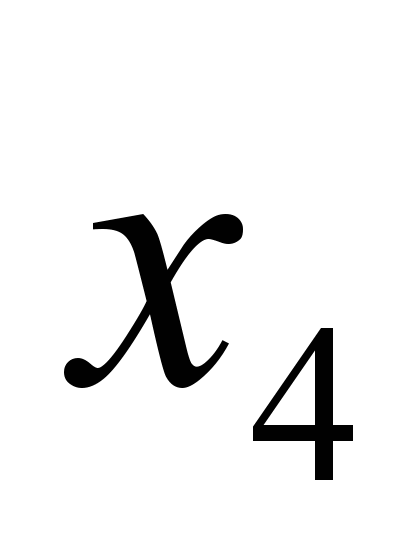 и выходом для каждой пары. При этом возможны четыре варианта, когда выход не зависит от переменной и равен 0 или 1, и когда выход зависит от Таблица 13.2
переменной и равен или , как отмечено справа от таблицы истинности. Исходя из этого, на информационные входы мультиплексора и подается лог. 0, лог. 1, или , как показано на рис.13.4. 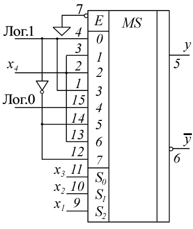 Рис. 13.4. Реализация ФАЛ, пример 13.2, с использованием мультиплексора КР1533КП7(74ALS151) Для синтеза ФАЛ можно использовать карты Карно, рис. 13.5. Парные наборы на ней расположены рядом, т.е. являются соседними. Объединим эти наборы и пометим числом, соответствующим наборам переменных , , . Можно заметить, что парные наборы легко выделяются проведением разделительных линий по переменным , , , рис. 13.5б. После объединения парных наборов получается карта Карно для трех переменных. 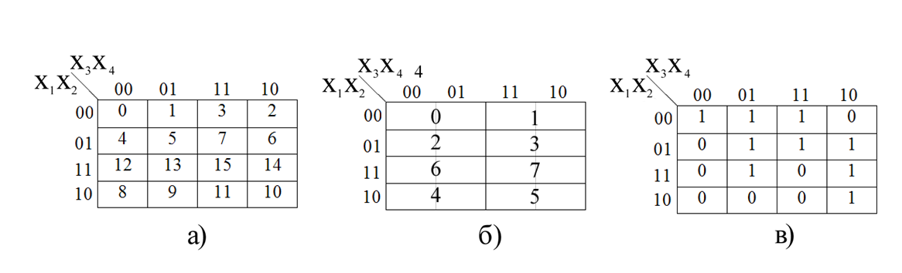 Рис. 13.5. Синтез ФАЛ с помощью карт Карно
Зададим теперь ФАЛ с помощью карты Карно, рис. 13.5в. Сопоставляя рис. 13.5б и рис. 13.5в можно заметить, что в клетке с номером 0 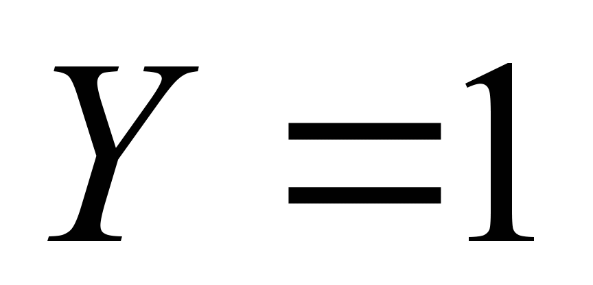и, следовательно, 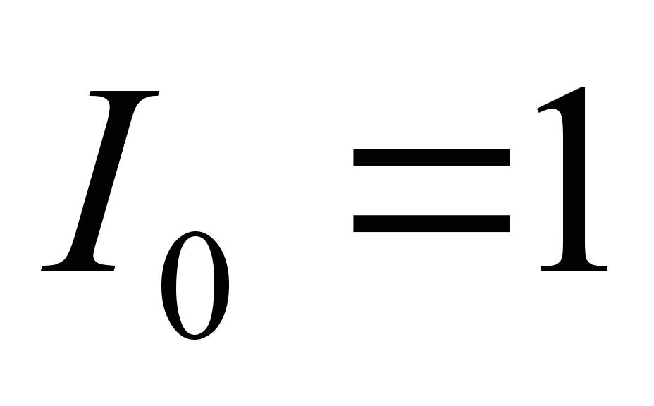. В клетке с номером 1 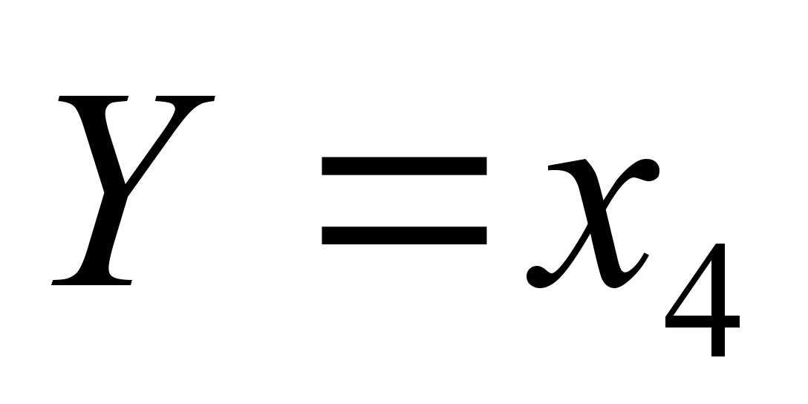, что дает 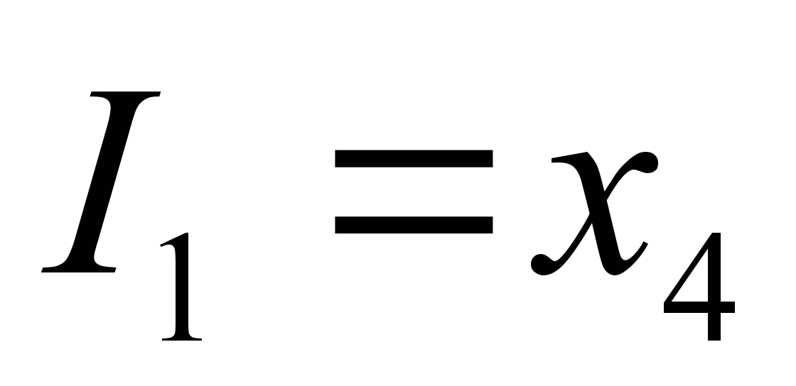. Продолжая рассмотрение дальше, получим итоговый результат 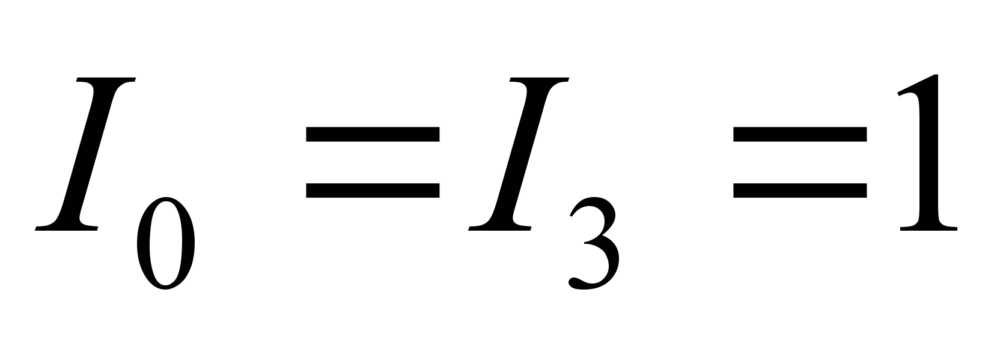, 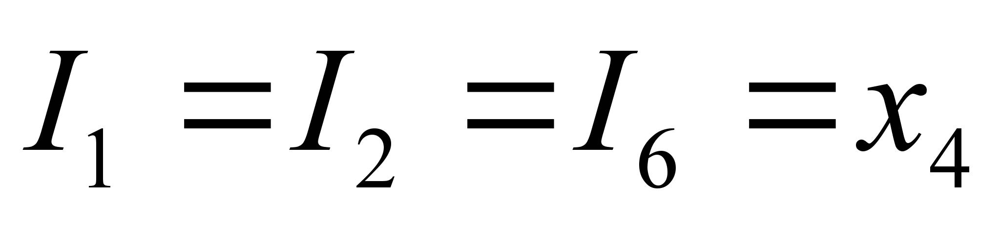, 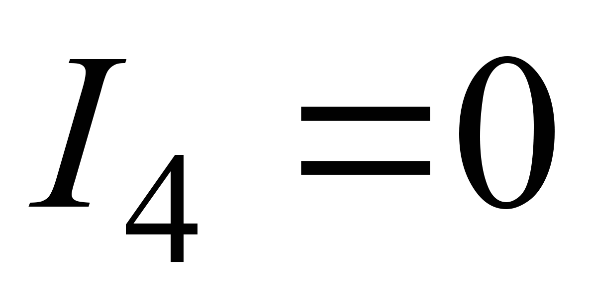, 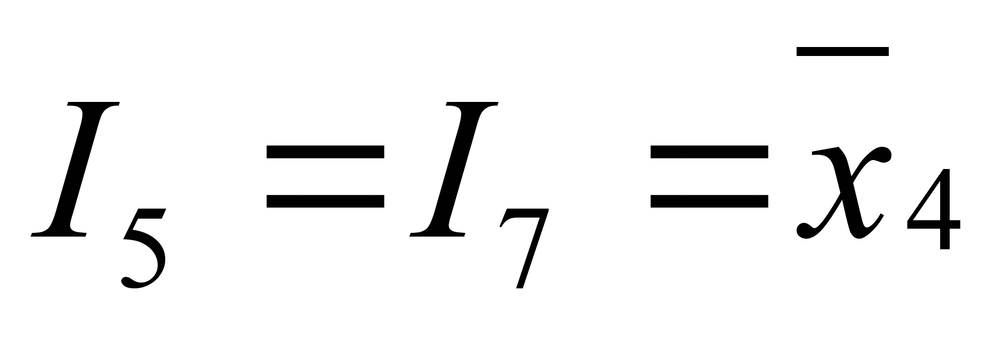. До сих пор мы различали парные наборы по переменной , которая затем подавалась на информационные входы. Однако в качестве “выделенной” может быть взята любая переменная. Более того, для технической реализации, не безразлично какую переменную следует выделять. Это связано с тем, что выбор выделенной переменной определяет количество информационных входов, на которые подаются константы 0, 1. Такие информационные входы не нагружают предыдущие цепи, поэтому их желательно иметь как можно больше. Очевидно, что для достижения этого, в качестве выделенной следует использовать переменную, от которой ФАЛ зависит меньше всего. Последнее можно установить по минимальной дизъюнктивной форме, подсчитав количество вхождений переменной в эту форму, как с инверсией, так и без нее.
Увеличение размерности мультиплексора
Максимальный размер мультиплексора, выпускаемого промышленностью 16:1. Мультиплексоры с большим числом входов можно построить из мультиплексоров с меньшим числом входов. Используются два метода, которые проиллюстрируем следующими примерами. Пример 13.3. Построить мультиплексор размерностью 32:1. Такой мультиплексор может быть построен, как показано на рис. 13.6, используя два мультиплексора 16:1.
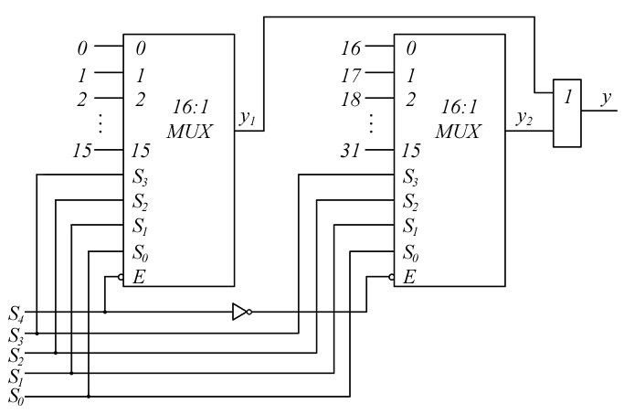
Рис. 13.6. Мультиплексор 32:1, используя два мультиплексора 16:1
Пример 13.4. Построить мультиплексор размерностью 256:1. Такой мультиплексор может быть построен по древовидной схеме, используя 17 мультиплексоров 16:1, рис. 13.7. 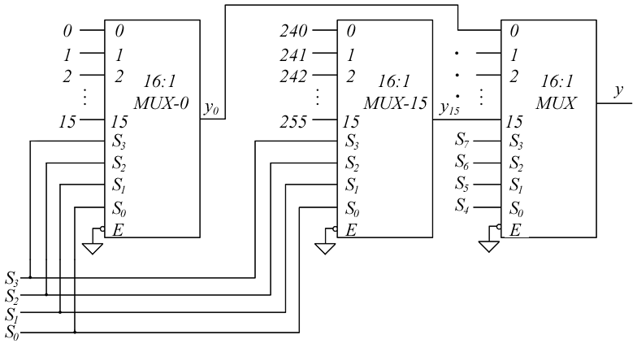
Рис. 13.7. Мультиплексор 256:1, используя 17 мультиплексоров 16:1
Декодеры/Демультиплексоры и их использование в синтезе комбинационных схем В интегральном исполнении декодеры (дешифраторы) реализуются с использованием элементов И-НЕ, и поэтому на выходах таких декодеров генерируются минтермы в инверсном виде. Большинство интегральных декодеров имеют один или несколько стробирующих или разрешающих входов. Схема декодера 2:4 с разрешающим входом, построенная на элементах И-НЕ, показана на рис. 13.8. 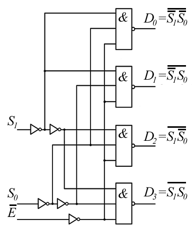
Рис. 13.8. Логическая схема декодера 2:4 с разрешающим входом
Таблица истинности декодера 2:4 дана в таблице 13.3. Если разрешающий вход 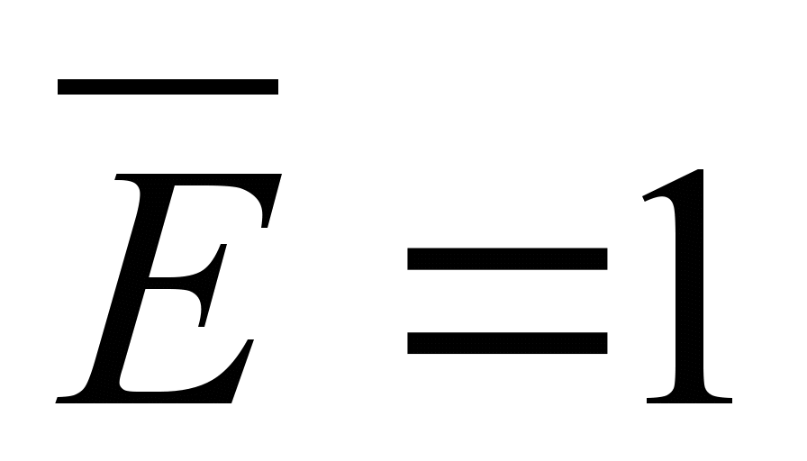, то все выходы декодера равны 1 независимо от значения входов и . Когда разрешающий вход 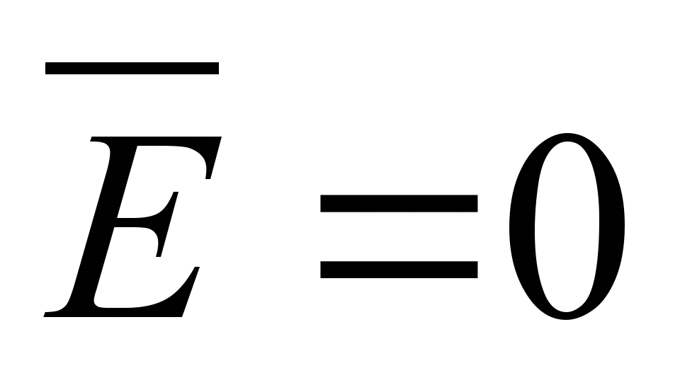, схема работает, как декодер с инверсными выходами. Условное обозначение схемы показано на рис. 13.9.
Таблица 13.3
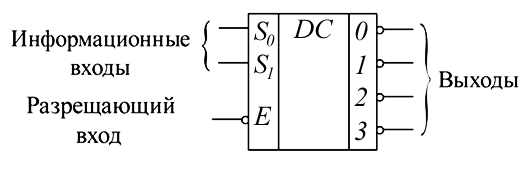 Рис. 13.9. Условное обозначение декодера 2:4
Декодер с разрешающим входом может работать как демультиплексор. Демультиплексор это комбинационная схема, которая принимает информацию на единственный вход и передает эту информацию на один из 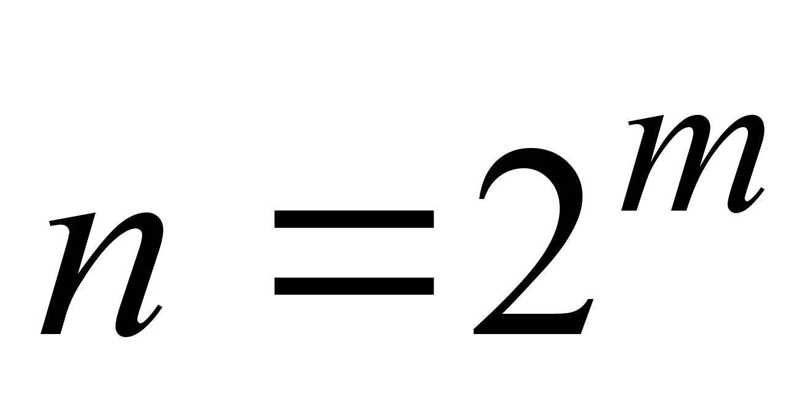 возможных выходов. Выбор определенного выхода осуществляется с помощью адресных входов. Декодер, который мы рассмотрели, может работать как демультиплексор, если вход использовать как информационный вход, а информационные входы декодера и использовать как адресные входы. Условное обозначение демультиплексора показано на рис. 13.10. 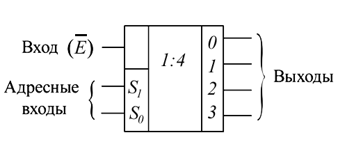
Рис. 13.10. Условное обозначение схемы рис. 13.9, используемой как демультиплексор
Информация с единственного входа демультиплексора поступает на один из выходов, в зависимости от двоичных значений на адресных входах. Это можно проверить, используя таблицу истинности, таблица 13.3. Поскольку для декодера и демультиплексора используется одна и та же логическая схема, декодер с разрешающим входом называется декодером/демультиплексором. Демультиплексор осуществляет операцию обратную мультиплексору. Декодеры/демультиплексоры используются в синтезе комбинационных схем. Особенно эти устройства полезны при синтезе КС с несколькими выходами. Декодеры/демультиплексоры в интегральном исполнении возможны как 2:4, 3:8 и 4:16 линий. Выходы таких устройств, как правило, имеют низкий активный уровень. Рассмотрим использование декодеров/демультиплексоров в синтезе комбинационных схем. Пример. 13.5. Реализовать схему полного сумматора, используя декодер/демультиплексор. Решение. Из таблицы истинности для полного сумматора 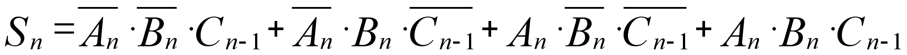
Используя двойную инверсию и закон Де Моргана, преобразуем эти выражения 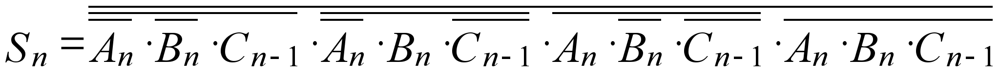 (13.3) 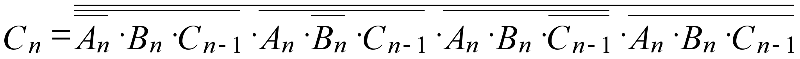 (13.4) Или функция может быть записана как , а функция может быть записана как . Для реализации полного сумматора необходимо использовать декодер/демультиплексор 3:8 линий, например КР1533ИД7(SN74ALS138). Схема полного сумматора показана на рис. 13.12.
Рис. 13.12. Реализация полного сумматора с использованием декодера/демультиплексора
При синтезе КС с использованием мультиплексоров дополнительные элементы не используются, в то время как их необходимо использовать при синтезе КС на основе декодеров/демультиплексоров. Тем не менее, несмотря на это, декодеры/демультиплексоры являются более экономичными в случаях синтеза многовыходовых КС. В таких случаях один мультиплексор требуется для реализации каждого выхода, а при использовании декодера/демультиплексора только дополнительные схемы И-НЕ. Увеличение размерности декодеров/демультиплексоров Поскольку ИС КР1533ИД3 является самым большим (4:16 линий) декодером/демультиплексором, то для увеличения размерности декодеров/демультиплексоров используются методы, показанные на рис. 13.13 и рис. 13.14.
Рис. 13.13. Построение 5:32 линии декодера/демультиплексора, используя два 4:16 линий декодера/демультиплексора
Рис. 13.14. Построение 8:256 линий декодера/демультиплексора, используя 17 декодеров/демультиплексоров 4:16 линий
3. ПОРЯДОК ВЫПОЛНЕНИЯ ЛАБОРАТОРНОЙ РАБОТЫ
Программа компьютерного моделирование электронных схем Multisim:Компоненты: ИС 1533КП7(74ALS151), ИС 1533ИД7(74ALS138), ИС 1533ЛА1(74ALS20), ИС 1533ЛН1(74ALS04).
3.1. Исследование работы мультиплексора.
1. Установить ИС 1533КП7 в рабочей области схемы. 2. Вывод 16 ИС соединить с источником питания +5V, а вывод 8 с общей шиной установки. 3. Изменяя значения адресных входов от 000 до 111 и входные данные (0,1), проследить за состоянием выходов мультиплексора и проверить работу мультиплексора. Результаты отразить в таблице истинности мультиплексора.
3.2. Синтезировать и реализовать, используя мультиплексор ИС 1533КП7, следующие ФАЛ:
а) ( ), б) ( ).
3.3. Исследование работы декодера/демультиплексора.
1. Установить ИС 1533ИД7 в рабочей области схемы. 2. Вывод 16 ИС соединить с источником питания +5V, а вывод 8 с общей шиной установки. 3. Изменяя значения адресных входов от 000 до 111 проследить за состояниями выходов. Результаты наблюдений отразить в таблице истинности и получить выражения для выходов .
3.4. Исследование работы полного сумматора на основе декодера/демультиплексора. 1. Собрать схему полного сумматора, рис. 13.12. 2. Исследовать работу полного сумматора, результаты отразить в таблице истинности.
3.5. Синтезировать и исследовать работу полного вычитателя на основе декодера/демультиплексора.
3.6. Синтезировать и исследовать работу компаратора для сравнения двухразрядных двоичных чисел.
4. СОДЕРЖАНИЕ ОТЧЕТА
1. Цель работы. 2. Схемы, исследуемые в работе. 3. Таблицы, отражающие результаты исследований. 4. Выводы по результатам исследований.
5. КОНТРОЛЬНЫЕ ВОПРОСЫ
1. Дать определение мультиплексора и объяснить его работу. 2. Объяснить, каким образом мультиплексоры используются для синтеза КС. 3. Дать основные преимущества использования мультиплексоров при реализации ФАЛ. 4. Дать определение декодера/демультиплексора и объяснить его работу. 5. Объяснить, каким образом декодеры/демультиплексоры используются для реализации ФАЛ. 6. Почему декодеры/демультиплексоры наиболее удобны для реализации многовыходовых ФАЛ. Литература: Будько Цифровые устройства (Минск БГУИР 2010) УДК 004.3*144(076) ББК 32.973.26-04 7 Б90
| |||||
| (С) БГУИР |